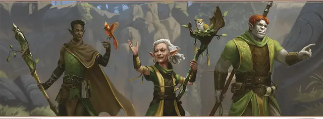

Смотритель Изумрудного анклава
Emerald Enclave Caretaker

Характеристики Телосложение, Интеллект, Мудрость
Черта Птенец Изумрудного анклава
Навыки Выживание, Природа
Инструменты Набор травника
Снаряжение Выберите А или Б: (А) Короткий лук, 20 Стрел, Набор травника, Спальник, Одеяло, Кошель, Палатка, Дорожная одежда и 13 ЗМ; или (Б) 50 ЗМ
Вы — Смотритель в рядах Изумрудного анклава, вы присматриваете за теми, кто присматривает за миром. Вы научились, как жить в природе — сами или с помощью товарищей по Анклаву: как выследить добычу, где собрать травы, даже как предсказать погоду. Эти умения вы используете, чтобы сохранять баланс между природой и цивилизацией, а также избавлять мир от неестественных тварей.